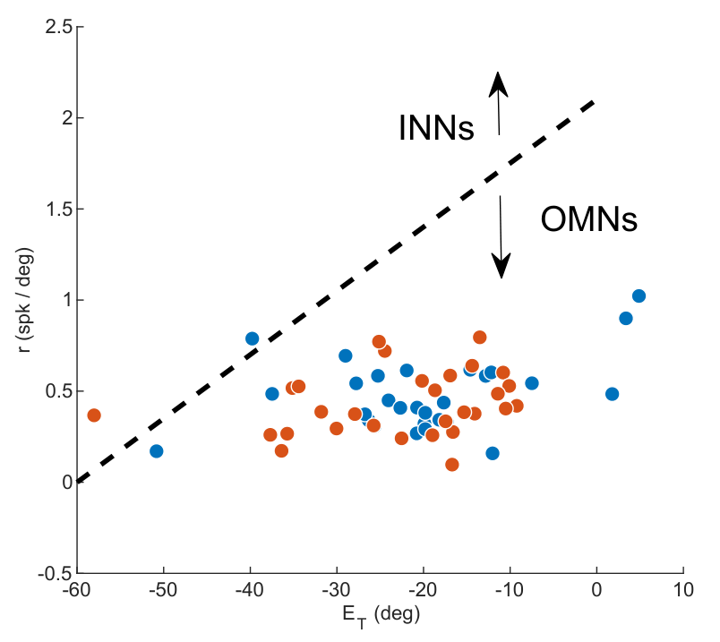
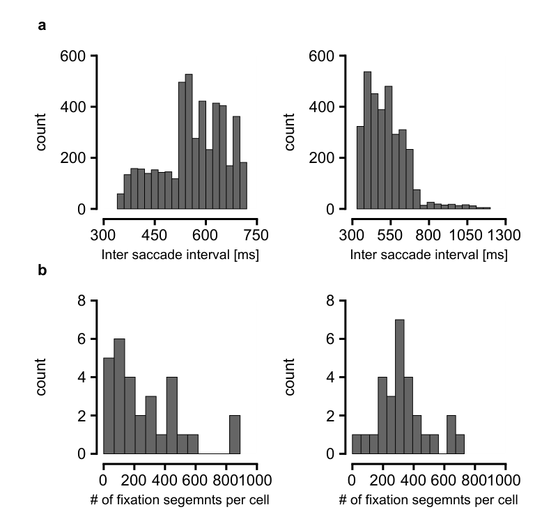
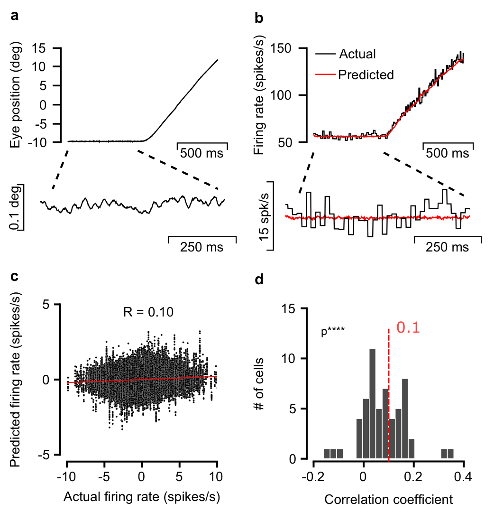
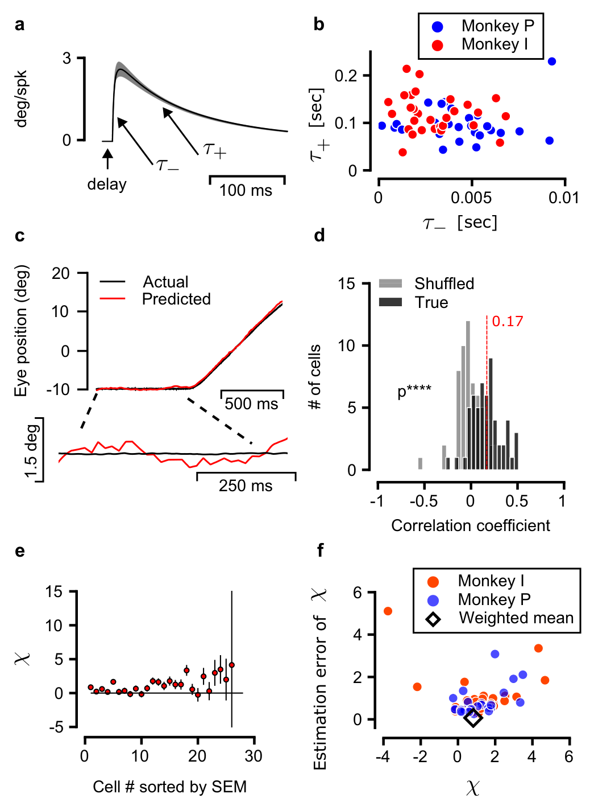

7 Eye drift points to a shared neural drive
Even when a monkey looks at a stationary spot, its eyes drift slightly. This chapter explains how paired measurements of eye angle and the firing of neurons that command eye muscles support a shared neural source of that drift, before considering a particular circuit mechanism.
Looking steadily at a small spot does not hold the eye perfectly still. Between brief, rapid movements called microsaccades, the eye makes a small, smooth, irregular movement called fixational drift. Here drift names the slow eye movement, which can be largely random. Systematic drift in the memory equations instead means a nonzero mean velocity. Does this movement begin as noise in the muscles, or does the brain send a changing command to them? Ben-Shushan and colleagues answer this in two stages. Their recordings support a large shared drive upstream of the motor neurons. Their model then proposes a particular source: random motion of the eye position stored in a memory circuit.1
The paper’s estimate of the common contribution can be read directly as
\[ \chi\simeq\frac{\operatorname{Cov}(\Delta\widehat E,\Delta E)}{\operatorname{Var}(\Delta E)}, \qquad \langle\chi\rangle_w=0.82\pm0.07. \]
Here \(\Delta E\) is measured horizontal eye displacement during 350 ms, \(\Delta\widehat E\) is the displacement reconstructed from one motor neuron’s spikes, and \(\chi\) estimates the fraction of displacement variance due to the shared drive. The reported value is a weighted average over cells and its weighted error. This interpretation assumes that the shared signal has the same calibrated gain in both quantities and that the remaining fluctuations are approximately uncorrelated. The covariance section derives the formula and examines these assumptions; see paper, PDF p. 5.
[Derivation: the shared variance estimate] Write \(X=\Delta\widehat E=C+\varepsilon\) and \(Y=\Delta E=C+\eta\), where \(C\) is the shared contribution to displacement after calibration, \(\varepsilon\) is the remaining prediction fluctuation, and \(\eta\) is the remaining eye-displacement fluctuation. Expanding the covariance gives
\[ \operatorname{Cov}(X,Y)=\operatorname{Var}(C) +\operatorname{Cov}(C,\eta)+\operatorname{Cov}(\varepsilon,C) +\operatorname{Cov}(\varepsilon,\eta). \]
If the shared component has equal calibrated gains and the other covariance terms are small, the numerator estimates \(\operatorname{Var}(C)\). Dividing by \(\operatorname{Var}(Y)\) estimates the fraction of eye-displacement variance shared with the neural prediction. The later calculation considers the residual private contribution from the recorded cell and the consequences of unequal gains.
This distinction connects the previous chapters to a measurement outside the brain. A memory coordinate can diffuse inside a neural network, but the movement produced by that coordinate also depends on the muscles and the mechanics of the eye. We need to follow the signal through those stages before comparing a neural diffusion law with an eye trajectory.
A recording from one motor neuron becomes useful for this comparison only after its spikes and the eye’s movement can be expressed on the same scale. The larger movements provide that calibration. Applying it during fixation then lets us ask whether independent motor noise could explain the observed relationship, and estimate the shared contribution under explicit gain and independence assumptions.
7.1 From stored eye position to muscle action
The eye anatomy and motor action explain why a position must be maintained by an ongoing command. The oculomotor integrator supplies the lasting position signal. In the proposed mechanism, the continuous attractor described in the foundations and network model stores horizontal eye position. Noise moves the stored value along that attractor.2
The signal reaches ocular motoneurons (OMNs), whose spikes activate the eye muscles. The recordings came from the abducens nucleus, a group of brainstem neurons that includes OMNs activating the lateral rectus muscle, which turns the eye outward. Other neurons in that nucleus carry signals to other neurons rather than directly to muscle. The study separated these cell types by how their firing changed with eye position and movement. Finally, the muscles and the mechanical properties of the eye, together called the ocular plant, turn neural activity into movement.3
Original paper figure: Ben-Shushan et al. (2022), Extended Data Figure 6


There are three possible contributions to an observed fixational drift:
- A changing shared command sent to many OMNs.
- Private spike variability in individual OMNs.
- Variability after those neurons, including muscle and measurement noise.
Private spike fluctuations can partly cancel when many neurons act together. A common command survives this averaging. This is why the noisy activity of one neuron can reveal a source that dominates the much smoother eye movement. The shared drive and common command below mean the signal sent to many OMNs. The variable \(C\) later measures its contribution to eye displacement after motor and muscle filtering.
7.2 The recordings pair one motor neuron with movement at a time
The authors reanalyzed earlier experiments in two male rhesus macaques. With their heads held still, the monkeys first looked at a stationary spot of light on a monitor and then followed the moving spot. A wire search coil on one eye measured the eye’s angle while an electrode recorded one neuron’s spikes. There were 57 identified OMNs. Each recording paired one OMN with eye movement. There were no simultaneous recordings of multiple OMNs. Thus the analysis cannot directly measure the covariance between two recorded motor neurons.45
The initial stationary target was followed by 500–700 ms of required fixation before the target stepped and began moving. Neural voltage was sampled at 25 kHz and eye position at 1 kHz. The authors detected microsaccades using eye speed and acceleration, removed 30 ms on each side of them, and manually checked the remaining segments. For the main displacement analysis, segments shorter than 350 ms were excluded and longer ones were split into nonoverlapping 350 ms pieces. There were 302 such pieces per cell on average, with different counts across cells. These repeated observations improve estimates within two animals. They do not create 57 independent animal samples.6
Original paper figure: Ben-Shushan et al. (2022), Extended Data Figure 7


The large movements have a useful role even though the scientific question concerns tiny drifts. They produce enough rate change to estimate how each cell’s activity depends on eye movement. The fitted relationship is then applied during fixation. This transfer is an assumption to examine, because an incorrect gain during drift would change the inferred common variance. Gain is the scale that converts a change in one signal into a change in the other.

7.3 A fitted model links movement to firing rate
Position alone does not predict a motor neuron’s activity during a movement. At the same position, firing can differ when the eye is moving or accelerating. The paper therefore fits
\[ \widehat f(t)=k[E(t+\Delta t)-E_T] +r\dot E(t+\Delta t)+m\ddot E(t+\Delta t). \]
Here \(E\) is horizontal eye position in degrees and \(\widehat f\) is predicted firing rate in spikes/s. The position threshold \(E_T\) sets where the position term reaches zero. The coefficients have units
\[ [k]=\frac{\text{spikes}}{\text{s}\,\text{deg}},\qquad [r]=\frac{\text{spikes}}{\text{deg}},\qquad [m]=\frac{\text{spikes}\,\text{s}}{\text{deg}}. \]
Multiplying by position, velocity, and acceleration gives spikes/s in all three terms.
The position sensitivity \(k\) is the fitted change in firing rate per degree of eye position when velocity and acceleration are fixed. Similarly, \(r\) is the fitted rate change per unit eye velocity, and \(m\) is the fitted rate change per unit eye acceleration. The position term describes ongoing firing associated with holding the eye at an angle. The velocity term allows a different rate while the eye passes through that same angle. The acceleration term allows another change while its velocity changes. Thus \(k\), \(r\), and \(m\) describe different demands on the motor signal. They are fitted coefficients of the combined neural and mechanical relationship. In particular, \(m\) is not a direct measurement of the eye’s mass. The delay \(\Delta t\) is in seconds: firing at time \(t\) predicts movement at the later time \(t+\Delta t\) for a positive neural lead. This is the paper’s Eq. 2, including its threshold and time shift.7
The observed rate \(f(t)\) was estimated as the inverse of the interval between successive spikes, constant between those spikes. For each cell, the authors minimized the sum of squared rate errors,
\[ L=\sum_{a=1}^{n_{\rm trials}}\sum_{t_j\in[0,T_a]} \left[f_a(t_j)-\widehat f_a(t_j;k,r,m,\Delta t,E_T)\right]^2. \]
\(a\) labels trials, \(T_a\) is trial duration, and \(t_j\) is a sampled time within that trial. This is Eq. 3 with the trial count renamed so that it cannot be confused with a neuron count. Fits used full trials, including fixation and pursuit. To predict a trial’s rate, that trial was left out of the parameter fit. Acceleration was estimated from velocity after local polynomial smoothing over 21 ms. Trials in which the rate fell below 20 Hz were discarded: the linear formula is intended for active cells above firing threshold, whereas firing cannot become negative.8
During fixation, the authors subtracted each segment’s mean firing rate, joined the segments, and compared observed and predicted rate fluctuations. Figure 1c illustrates a weak relationship for one cell. Fig. 1d shows a positive population effect. The authors used a one sided t test: it compares the mean correlation across 57 cells with zero, after dividing that mean by its estimated sampling uncertainty. The positive direction was the one being tested.
The p value is the probability that this test would give a value at least as large as observed if the population mean correlation were zero and the test’s sampling assumptions held. The reported \(p=3\times10^{-9}\) measures how unusual the result is under that reference. It is not the probability that the zero-mean hypothesis, or a proposed neural mechanism, is true. A weak single cell relationship is expected here because the tiny movement produces small rate changes against much larger spike variability. This is evidence of a relationship, before any estimate of the fraction of common motion.9
Calculation: what the correlation test compares
Let \(R_i\) be the correlation for cell \(i\), \(\bar R\) the mean across \(n=57\) cells, and \(s_R\) their sample standard deviation. The number compared with the reference distribution, called the test statistic, is \(t=\bar R/(s_R/\sqrt{n})\). The denominator estimates the uncertainty in the mean. The reference is the Student t distribution with \(n-1=56\) degrees of freedom: the distribution of this ratio for independent, identically distributed normal observations with true mean zero. Applying it to the cell correlations uses that sampling approximation. The one sided p value is the reference probability above the observed \(t\). The observations in this calculation are cells recorded from two monkeys, not 57 independent animals.
Original paper figure: Ben-Shushan et al. (2022), Figure 1


7.4 A calibrated filter predicts eye position from one cell’s spikes
The mathematical-tools chapter introduces impulse responses and convolution. Here they reconstruct eye position from a recorded spike train.
To ask how much eye movement is shared with a neuron, it helps to express both signals in degrees. The paper reverses the fitted relationship: a cell’s spike train becomes the input, and its prediction of eye position becomes the output. This operation is an inverse of the movement-to-rate fit, rather than a new fit to small drift residuals.
Let \(x(t)=E(t)-E_T\). Ignoring the time shift for a moment, the deterministic relation is
\[ m\ddot x+r\dot x+kx=f. \]
A causal filter computes its present output from present and past input. For the equation above, its impulse response \(h_0(u)\) is the position response to one instantaneous spike at time zero. To factor the equation, consider a time component \(e^{pt}\): \(p\) is its exponential growth or decay rate in inverse seconds, and differentiation multiplies it by \(p\). The algebraic ratio of output to input for that component is
\[ H_0(p)=\frac{1}{mp^2+rp+k} =\frac{1}{m(p+1/\tau_+)(p+1/\tau_-)}. \]
Factoring the quadratic gives the slow and fast decay times
\[ \tau_+=\frac{2}{r/m-\sqrt{(r/m)^2-4k/m}},\qquad \tau_-=\frac{2}{r/m+\sqrt{(r/m)^2-4k/m}}. \]
These are the paired signs in the paper’s Eq. 7, with \(\tau_+>\tau_-\) when \(k,r,m>0\) and \(r^2>4km\). Under these conditions both components decay without oscillation.
At rest, the inverse equation gives \(x=f/k\): with the threshold fixed, doubling \(k\) halves the position offset predicted from the same steady firing rate. During a change, \(r\) and \(m\) also affect the response through the two timescales. This is a consequence of the fitted relationship, not evidence that changing one recorded neuron’s rate alone sets eye position. The same factorization gives two useful identities:
\[ \tau_+\tau_-=\frac{m}{k},\qquad \tau_++\tau_-=\frac{r}{k}. \]
[Derivation: weights of the two decaying responses]
We can obtain the response to a spike directly from the differential equation. After the spike, the input is zero, and each of the two exponentials solves the remaining homogeneous equation. Write their combination as
\[ h_0(u)=A e^{-u/\tau_+}+B e^{-u/\tau_-},\qquad u>0. \]
To find \(A\) and \(B\), treat the spike as a short pulse of unit area and shrink its duration to zero. The position change during that pulse tends to zero, so \(h_0(0^+)=0\). Integrating \(m h_0''+r h_0'+k h_0\) across the pulse gives \(m h_0'(0^+)=1\): the velocity changes by \(1/m\), while position and velocity before the causal response are zero. Therefore
\[ A+B=0,\qquad -\frac{A}{\tau_+}-\frac{B}{\tau_-}=\frac1m. \]
Substituting \(B=-A\) gives
\[ A\left(\frac1{\tau_-}-\frac1{\tau_+}\right)=\frac1m, \qquad A=\frac{\tau_+\tau_-}{m(\tau_+-\tau_-)}. \]
Making the response zero before the spike gives the impulse response \(h_0(u)\).
The corresponding impulse response is
\[ h_0(u)=\frac{\Theta(u)}{m}\, \frac{\tau_+\tau_-}{\tau_+-\tau_-} \left(e^{-u/\tau_+}-e^{-u/\tau_-}\right). \]
\(\Theta(u)\) is zero for \(u<0\) and one for \(u>0\), which makes the response zero before the input. Restoring the fitted neural lead delays this response: \(h(u)=h_0(u-\Delta t)\). Write the spike train as \(\xi(t)=\sum_j\delta(t-t_j)\), where \(\delta\) is an ideal instantaneous impulse of unit area, so integration over one spike counts one event. The prediction is
\[ \widehat E(t)=E_T+\int_{-\infty}^{t}h(t-v)\xi(v)\,dv =E_T+\sum_j h(t-t_j). \]
These expressions reproduce Eqs. 4–6, including the factor \(\tau_+\tau_-/m\) and the delay. The convolution integral adds the responses to all past spikes. With spike count treated as a count, \(\xi\) has units spikes/s and \(h\) has units degrees/spike. Each spike contributes a decaying position response. Adding those responses produces degrees.10
For a constructed example, take \(k=4\) spikes/(s deg), \(\tau_+=0.120\) s, and \(\tau_-=0.005\) s. The identities above require \(r=0.500\) spikes/deg and \(m=0.00240\) spikes s/deg. Then
\[ h_0(u)=2.174\left(e^{-u/0.120}-e^{-u/0.005}\right) \ \text{deg/spike},\quad u>0, \]
and its area is \(2.174(0.120-0.005)=0.250\) deg s/spike, equal to \(1/k\). A steady rate of 80 spikes/s predicts an offset of 20 degrees above \(E_T\). This checks the gain and the time constants.
Check: static gain and equal decay times
The kernel’s area checks its normalization:
\[ \int_0^\infty h_0(u)\,du =\frac{\tau_+\tau_-}{m(\tau_+-\tau_-)}(\tau_+-\tau_-) =\frac1k. \]
Thus a constant input rate \(f_0\) predicts \(E_T+f_0/k\), exactly the static forward relation. A kernel with unit area would give the wrong conversion unless \(k\) had already been absorbed into the input. When the two decay times coincide, \(r^2=4km\), the limit is \(h_0(u)=\Theta(u)u e^{-u/\tau}/m\). The distinct exponential formula is used for the fitted responses in the paper.
Figure 2a–b shows typical fitted times of about 5 ms and 120 ms. Figure 2c shows that a single cell’s reconstructed drift is much noisier than the measured movement. Pearson correlation is the ordinary linear correlation defined as \(\rho\) in the foundations; this paper writes it as \(R\). Across 350 ms displacement pairs, the mean Pearson correlation was \(\langle R\rangle=0.17\pm0.02\), where the error is the standard error of the mean (SEM). SEM estimates uncertainty in the across-cell mean, rather than the spread of individual cells or uncertainty across animals. The one sided test gave \(p=3.8\times10^{-12}\). Shuffling which measured segment was paired with which spike prediction centered the comparison near zero. Here and below \(\langle\cdot\rangle\) over cells means a population average.11
Original paper figure: Ben-Shushan et al. (2022), Figure 2


7.6 Calibrated covariance estimates the common share of movement variance
The variance bound establishes that a shared signal exists, but leaves its size open. The next calculation uses the inverse filter’s calibrated gain in degrees. For one 350 ms interval, write the measured displacement and the single cell prediction as
\[ Y=\delta E=C+\eta,\qquad X=\delta\widehat E=C+\epsilon, \]
where \(C=\delta E_C\) is the common upstream contribution, \(\eta\) combines motor neuron, muscle, and measurement contributions to measured displacement, and \(\epsilon\) is the prediction error from the individual cell. All are displacement variables in degrees. The calculation assumes:
- The common contribution enters both signals with unit gain, meaning the same one-for-one displacement scale.
- \(C,\eta,\epsilon\) are pairwise uncorrelated to the required accuracy.
Expanding the covariance shows why those assumptions matter:
\[ \operatorname{Cov}(X,Y)=\operatorname{Var}(C) +\operatorname{Cov}(C,\eta)+\operatorname{Cov}(\epsilon,C) +\operatorname{Cov}(\epsilon,\eta) \simeq\operatorname{Var}(C). \]
The common fraction is therefore estimated by
\[ \chi=\frac{\operatorname{Var}(C)}{\operatorname{Var}(Y)} \simeq\frac{\operatorname{Cov}(X,Y)}{\operatorname{Var}(Y)}. \]
These are Eqs. 11–15 in displacement form. The gain assumption requires that the relation calibrated during larger movements still applies during drift. There is also a small covariance between \(\epsilon\) and \(\eta\), because the recorded neuron’s private spikes contribute both to its predictor and to actual eye motion. The paper neglects this contribution as order \(1/N_m\) under its many neuron model.15
Correlation divides the same covariance by a different denominator:
\[ R=\frac{\operatorname{Cov}(X,Y)}{\sqrt{\operatorname{Var}(X)\operatorname{Var}(Y)}}, \qquad \chi\simeq R\sqrt{\frac{\operatorname{Var}(X)}{\operatorname{Var}(Y)}}. \]
Large private noise in a cell inflates \(\operatorname{Var}(X)\) and makes \(R\) small. It need not make the common contribution to the real movement small, because many independent private contributions average down there.
Example: correlation 0.17 with a common fraction 0.82.
These numbers are constructed to expose the distinction, not extracted from individual cells. Take independent centered variables with
\[ \operatorname{Var}(C)=0.00820\ \text{deg}^2,\quad \operatorname{Var}(\eta)=0.00180\ \text{deg}^2,\quad \operatorname{Var}(\epsilon)=0.22446\ \text{deg}^2. \]
Then \(\operatorname{Var}(Y)=0.01000\), \(\operatorname{Var}(X)=0.23266\), and \(\operatorname{Cov}(X,Y)=0.00820\), all in deg\(^2\). It follows that
\[ R=\frac{0.00820}{\sqrt{0.01000\times0.23266}}\simeq0.170, \qquad \chi=\frac{0.00820}{0.01000}=0.820. \]
One cell explains \(R^2\simeq2.89\%\) of displacement variance after linear rescaling, while the common signal supplies 82% of actual displacement variance. The larger, poorly predicted part of the single cell signal is private prediction noise.
The bars use the same physical scale, so the equal common pieces have equal lengths. See Shared and private variability, Eqs. 11–15, p. 10.
In the experiment, each cell gives a noisy estimate \(\chi_i\), and those estimates can lie outside \([0,1]\). The underlying variance fraction remains in that interval under the model, but the sample covariance need not. The paper estimates each standard error \(\Delta\chi_i\) mainly from covariance uncertainty, treating the measured displacement variance in the denominator as comparatively well determined. It then uses inverse variance weighting:
\[ w_i=\frac{1}{(\Delta\chi_i)^2},\qquad \widehat\chi=\frac{\sum_iw_i\chi_i}{\sum_iw_i},\qquad \sigma_{\widehat\chi}=\left(\sum_iw_i\right)^{-1/2}. \]
To see the weighting, let normalized weights \(a_i\) sum to one. Independent errors give variance \(\sum_i a_i^2(\Delta\chi_i)^2\) for \(\sum_i a_i\chi_i\). Minimizing this subject to \(\sum_i a_i=1\) gives \(a_i\propto1/(\Delta\chi_i)^2\) and the error above. The paper additionally assumes approximately normal errors around a common value. The last expression is a propagated estimation error under those assumptions. It does not measure variation across animals or uncertainty in the gain and independence assumptions. The reported result was \(0.82\pm0.07\), a weighted mean and weighted error for horizontal displacement over 350 ms. It is neither a fraction of distance traveled nor the fraction that one neuron’s spikes accurately predict.16
Ben-Shushan, N., Shaham, N., Joshua, M., & Burak, Y. (2022). Fixational drift is driven by diffusive dynamics in central neural circuitry. Nature Communications, 13, 1697. DOI. Main pp. 1–2, abstract and introduction. ↩︎
Ben-Shushan, N., Shaham, N., Joshua, M., & Burak, Y. (2022). Fixational drift is driven by diffusive dynamics in central neural circuitry. Nature Communications, 13, 1697. DOI. Main pp. 5–8, “Stochastic diffusion in a memory circuit,” Figs. 4–5. ↩︎
Ben-Shushan, N., Shaham, N., Joshua, M., & Burak, Y. (2022). Fixational drift is driven by diffusive dynamics in central neural circuitry. Nature Communications, 13, 1697. DOI. Main p. 9, “Behavioral task and recordings”; Supplementary Information, p. 11, Extended Data Fig. 6.↩︎
Ben-Shushan, N., Shaham, N., Joshua, M., & Burak, Y. (2022). Fixational drift is driven by diffusive dynamics in central neural circuitry. Nature Communications, 13, 1697. DOI. Main p. 9, “Behavioral task and recordings”; Supplementary Information, p. 11, Extended Data Fig. 6.↩︎
Ben-Shushan, N., Shaham, N., Joshua, M., & Burak, Y. (2022). Fixational drift is driven by diffusive dynamics in central neural circuitry. Nature Communications, 13, 1697, peer review file, p. 19, authors’ response to Reviewer 3: recordings did not contain multiple simultaneous OMNs. DOI.↩︎
Ben-Shushan, N., Shaham, N., Joshua, M., & Burak, Y. (2022). Fixational drift is driven by diffusive dynamics in central neural circuitry. Nature Communications, 13, 1697. DOI. Main p. 4, Fig. 2 caption; pp. 9–10, “Extracting the fixational segments” and “Eye position correlation coefficients”; Supplementary Information, p. 12, Extended Data Fig. 7. ↩︎
Ben-Shushan, N., Shaham, N., Joshua, M., & Burak, Y. (2022). Fixational drift is driven by diffusive dynamics in central neural circuitry. Nature Communications, 13, 1697. DOI. Main p. 9, “OMN firing rate estimators,” Eqs. 2–3. ↩︎
Ben-Shushan, N., Shaham, N., Joshua, M., & Burak, Y. (2022). Fixational drift is driven by diffusive dynamics in central neural circuitry. Nature Communications, 13, 1697. DOI. Main p. 9, “OMN firing rate estimators,” Eqs. 2–3. ↩︎
Ben-Shushan, N., Shaham, N., Joshua, M., & Burak, Y. (2022). Fixational drift is driven by diffusive dynamics in central neural circuitry. Nature Communications, 13, 1697. DOI. Main p. 3, Fig. 1; p. 9, “Firing rate correlation coefficients.” ↩︎
Ben-Shushan, N., Shaham, N., Joshua, M., & Burak, Y. (2022). Fixational drift is driven by diffusive dynamics in central neural circuitry. Nature Communications, 13, 1697. DOI. Main p. 9, “Model inversion,” Eqs. 4–7. Factorization, units, static gain check, and repeated-pole limit are derived here of those equations. ↩︎
Ben-Shushan, N., Shaham, N., Joshua, M., & Burak, Y. (2022). Fixational drift is driven by diffusive dynamics in central neural circuitry. Nature Communications, 13, 1697. DOI. Main pp. 2–4, Fig. 2; pp. 9–10, “Eye position correlation coefficients,” Eq. 8 and shuffle procedure. ↩︎
Ben-Shushan, N., Shaham, N., Joshua, M., & Burak, Y. (2022). Fixational drift is driven by diffusive dynamics in central neural circuitry. Nature Communications, 13, 1697. DOI. Main p. 3, “Central source”; Supplementary Information, p. 2, “The explanatory power of a single OMN,” Eqs. S1–S2. The residual-variance proof is expanded here for teaching. ↩︎
Ben-Shushan, N., Shaham, N., Joshua, M., & Burak, Y. (2022). Fixational drift is driven by diffusive dynamics in central neural circuitry. Nature Communications, 13, 1697. DOI. Main p. 3, “Central source”; Supplementary Information, p. 2, “The explanatory power of a single OMN,” Eqs. S1–S2. The residual-variance proof is expanded here for teaching. ↩︎
Ben-Shushan, N., Shaham, N., Joshua, M., & Burak, Y. (2022). Fixational drift is driven by diffusive dynamics in central neural circuitry. Nature Communications, 13, 1697. DOI. Main p. 7, Discussion, anatomical and stimulation support for independent intrinsic OMN variability; peer review file, pp. 19, 21, 23.↩︎
Ben-Shushan, N., Shaham, N., Joshua, M., & Burak, Y. (2022). Fixational drift is driven by diffusive dynamics in central neural circuitry. Nature Communications, 13, 1697. DOI. Main pp. 4–5, Fig. 2e–f; p. 10, Eqs. 11–15. ↩︎
Ben-Shushan, N., Shaham, N., Joshua, M., & Burak, Y. (2022). Fixational drift is driven by diffusive dynamics in central neural circuitry. Nature Communications, 13, 1697. DOI. Main p. 4, Fig. 2f; p. 10, Eqs. 9, 16–17. The explanation distinguishes the reported weighted estimation error from unmodeled biological and calibration uncertainty. ↩︎